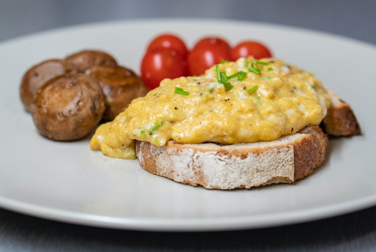

Scrambled Eggs

Description
Here's a timeless roast beef recipe that can be made with rump roast,
round roast, or sirloin roast. Slow-roasting on low heat works magic on
tougher cuts of meat and provides a tender roast beef recipe you’ll love!
Ingredients
- 4 large eggs
- 1/4 cup half-n-half
- 1/4 teaspoon Kosher salt
- 1 tablespoon unsalted butter
- black pepper, for serving
- fresh chopped herbs, for serving
Cooking Steps
- Salt the roast and let it come to room temp
- Preheat the oven to 375°F
- Insert slivers of garlic into the roast
- Rub the roast with olive oil, then season
- Put the roast on the rack with a pan below
- Brown at 375°F, then lower the heat to 225°F
- Roast to an internal temp of 135°F to 140°F
- Make the gravy as the roast rests
- Slice and serve